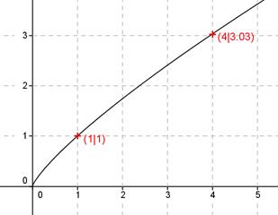

Aufgabe 52 Ergänzen Sie die Wertetabelle für den Graphen: y = x0,8 x 1 4 y 1 3,03  f(x) = 1 eingesetzt : 1 = x0,8 Logarithmieren: lg 1 = lg x0,8 lg 1 = 0,8 * lg x lg 1 0 lg x = ------ = ------ = 0 --> x = 100 = 1 0,8 0,8 f(4) = 40,8 = 3,03 mit der xy - Funktion des Taschenrechners berechnet.